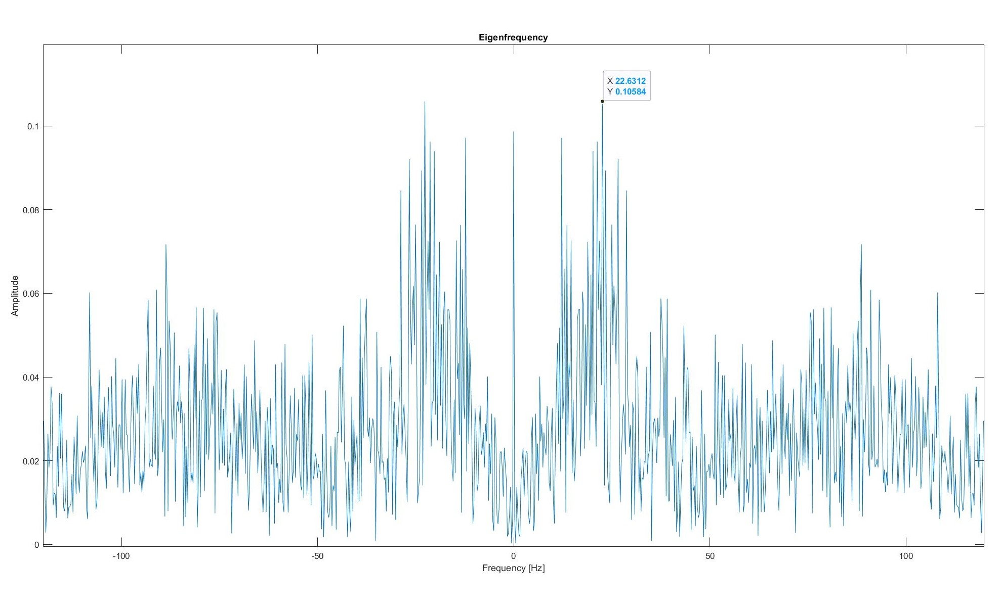

ANALYSIS
WE WERE ABLE TO CORRECTLY IDENTIFY IF A SEIZURE WAS PRESENT IN AN EEG SIGNAL 96.8% OF THE TIME!
Please note, all the code can be found in its respective subsection.
For our analysis, we considered three different methods of classification and compare their accuracies. The first algorithm we considered utilized principle component analyis and projecting new data into a basis set defined by training EEG data. Using this algorithm, we had a 88.4% accuracy rate. The second algorithm we considered was simply setting a threshold (defined by the training set) for the average value present in the Fourier transform of the data. This works because the magnitude of voltage increases with a seizure - compared to normal brainwaves. Using this algorithm we were accurate 96.8% of the time. The final algorithm we considered only looked at specific frequencies and smoothed the eigenvectors. Using this algorithm we were accurate 80% of the time.
The dataset contains the EEG signals for five different people. The data we used during this analysis can be found here.
DATASET
The following datasets contain data collected by medical professionals in hospitals using an EEG. The dataset contains 100 text files for each of the five persons, which each consists of 4096 samples collected at a sampling rate of 173.61 Hz. Each of the datasets only represents data from one individual. The data has been divided and selected for the most clean data from the entire dataset by doctors.
- Set Z contains data from a healthy person with their eyes open
- Set O contains data from a healthy person with their eyes closed
- Set N contains data from someone with epilepsy but does not contain any seizures
- Set F contains data from someone with epilepsy but does not contain any seizures
- Set S only contains seizure activity
* NOTE: The only difference in sets N and F were that the data comes from different people and different regions of the brain.
PREPARING DATA
The first step of our analysis is to put the data into column vectors in MATLAB. The code we used for this is found at the following links:
- Function to convert a text file to a MATLAB vector
- Code to run through a dataset and create a matrix of all data
This function creates a 4097 by 100 matrix for each dataset. In doing this, each column represents a single text file and each row is the time series data contained within an individual text file.
CLASSIFYING DATA: PRINCIPLE COMPONENT ANALYSIS
We separate the data into a test and training set. As the data has already been randomized by the collector of the data, we select the training set as the first 50 columns and the test set for the last 50. Once we have done this, we perform a discrete Fourier transform on the data to find out how much of each frequency is present. As we explained on the scientific background tab, an increased frequency of the signal and increased magnitude are two common characteristics of seizure EEG readings. This is depicted in the Fourier analysis of the following two signals:

We use an algorithm similar to the faces algorithm from QEA 1 Module 2 on the Fourier transformations of each of the training sets. We perform principal component analysis (PCA) on the training set to define a new set of basis vectors for the data. Each basis or Eigenvector represents a frequency that is the most variant across the dataset. A visualization of an eigenfrequency can be found below:
The spikes correspond with the frequencies that have the most variation across the training set. For example, we can see the highest spike occurring at 22 Hz. This means that there is lots of variation (because it is one of the first eigenfrequencies from PCA) at this frequency in the training set.
Using the test set, we project each of the Fouier transformations onto the basis vectors defined by the PCA of the training set. We then find the Euclidean Distance between the training and test sets in order to classify the test signal as either a seizure or not. The code used in this analysis can be found: here. Using this algorithm, we classified data correctly 88.4% of the time
CLASSIFYING DATA: FFT MAGNITUDE
For this algorithm, we considered classifying the data based the average magnitude in the Fourier transfrom. We set the threshold by finding the average value of the Fourier transform. Once we have found the average of all data, we subtract a percentage of the average of only the seizure data. For the test data, we find the fourier transform, find the average magnitude and compare it to the threshold. If the average value is greater than the threshold, we classify the data as a seizure. If not, we classify the signal as normal brainwaves. The code we used in this algorithm can be found: here. This algorithm classified the data correctly 96.8% of the time.
CLASSIFYING DATA: FILTERING AND SMOOTHING DATA
To increase the ease of analysing the data, we use a moving average filter in order to smooth out some features of the data that we don't necessarily need to a full precision. We used difference equations on the Fourier transformed data to enable ourselves to focus on more useful aspects of the data. A difference equation defines the sequence by specifying the relation between the nth element of the sequence and various quantities, including (potentially) previous terms in the sequence. Before any sort of filtering, the eigenfrequencies looked as in the graph attached to the "Classifying Data" tab. Furthermore, we filtered the data such that only frequencies between 0 Hz and 120 Hz were present in the analysis. The following plot demonstrates the filtering that we did:

We tested a two point moving average filter.
Post filtering, this graph appears as follows:

We tested a three point moving average filter.
Post filtering, this graph appears as follows:
We tested a four point moving average filter.
Post filtering, this graph appears as follows:
We tested a five point moving average filter.
Post filtering, this graph appears as follows:
We used a seven point moving average filter.
Post filtering, this graph appears as follows:
The function used to zero high frequencies can be found here. The algorithm code used in this analysis can be found: here. Using this algorithm, we acheived the following accuracy for various number of points included in the moving average filter.
| Number of Points in the Moving Average Filter | Accuracy |
|---|---|
| 1 | 88.4% |
| 2 | 82% |
| 3 | 80.4% |
| 4 | 80% |
| 5 | 80% |
| 7 | 80% |